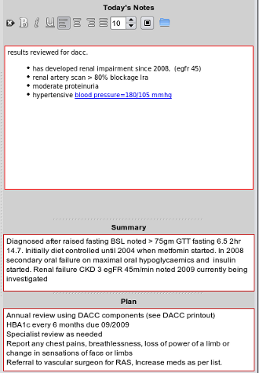

|  |
- As you will most certainly add progress notes on a per health issues basis, you will always have the management plan summary visible underneath the progress notes editor as you add notes for the current consultation.
- You should update this plan at the time if any major changes occur as this will carry over to the patients care plan automatically.
- A reminder about the configurablity of the screen:
- If all the text isn't showing (or if the historical summary and the management plan are not showing, then clicking over one of the
splitters will alow you to drag that area of the screen to reveal all, or resize the text windows.
- Note once again that any text which has been changed but not saved will be outlined in red, until either explicity saved by you when you press the F12 key, or by closing the tab, or closing EasyGP itself.
|